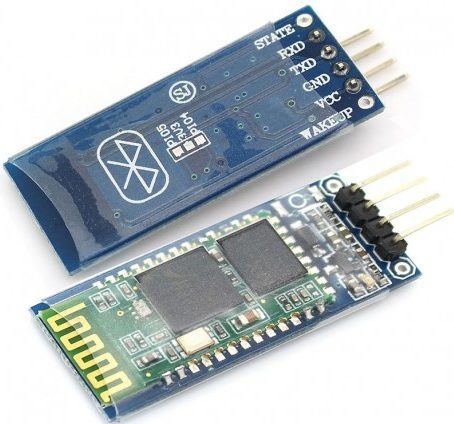
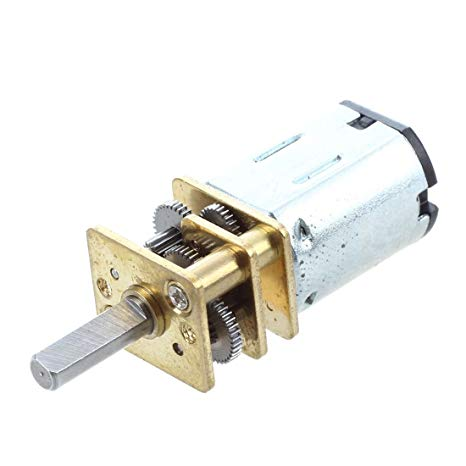
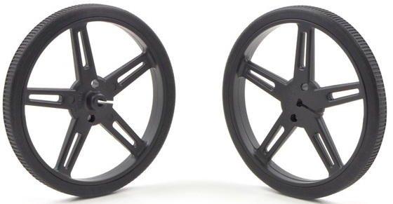
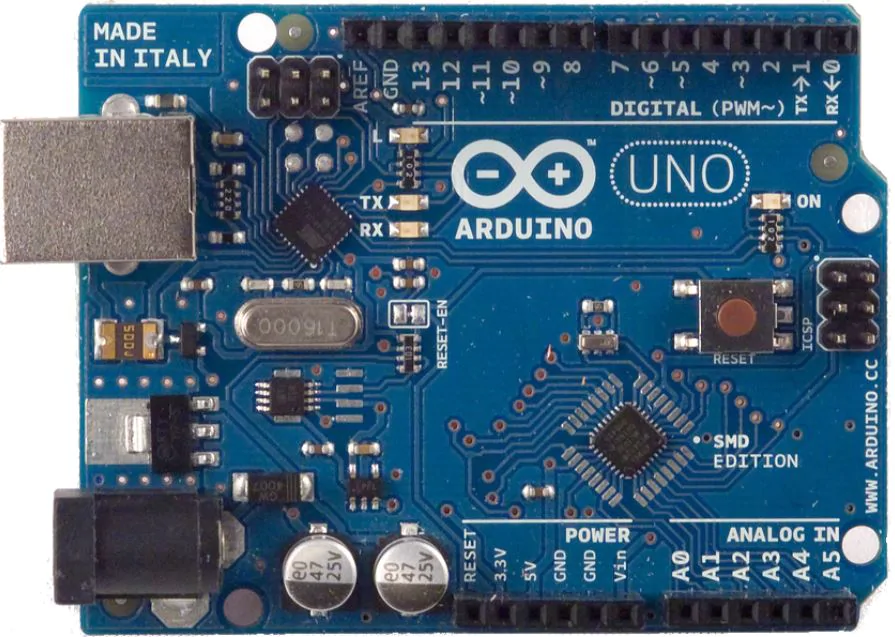

KIT DE PROTITO DE SILLA DE RUEDAS
- MODULO BLUETOOTH HC-06: se comporta como esclavo, esperando peteciones de conexión. El módulo de bluetooth HC-06 es muy populare para aplicaciones con microcontroladores PIC y Arduino. Se trata de un dispositivo relativamente económicos y que habitualmente se venden en un formato que permite insertarlos en un protoboard y cablearlo directamente a cualquier microcontrolador, incluso sin realizar soldaduras. En esta entrada del blog vamos a explicar un poco del funcionamiento y como configurarlo. Tiene un precio de $80.00

- Moto-reductores: un motorreductor es un reductor de velocidad con un motor directamente conectado. No utiliza un adaptador campana y cople para montar el motor, el motor es de hecho parte del reductor de velocidad. Una primera ventaja del motorreductor comparado con otra combinación motor y reductor, es la longitud. Son compactos en tamaño con una velocidad de 600 RPM a 12V, con un voltaje de operaciÓn de 1.5V a 14V tienen un torque de 1.6Kg, trabaja con una corriente de 400 Miliaperios y contienen un engranaje metálico. Costo de $108.50.

- Par de llantas Pololu 70x8mm, estas ruedas están diseñadas para encajar de forma segura en los ejes de salida de 3 mm y tienen neumticos de silicona y miden 70 mm (2,75 ”) de diámetro. Costo de $270.00 el par.

- Placa Arduino Uno: microcontrolador (circuito integrado que controla funcionamiento de una tarea determinada) trabaja con un voltaje de 5- 12Vcc y a una frecuencia de 20 MHz, tiene 6 puertos analógicos de entrada y 20 puertos de entrada/salida digital (incluyendo PWM), contienen una capacidad de memoria flash de 32 Kb y su comunicación a PC es por puerto USB. Costo de $175.00.
